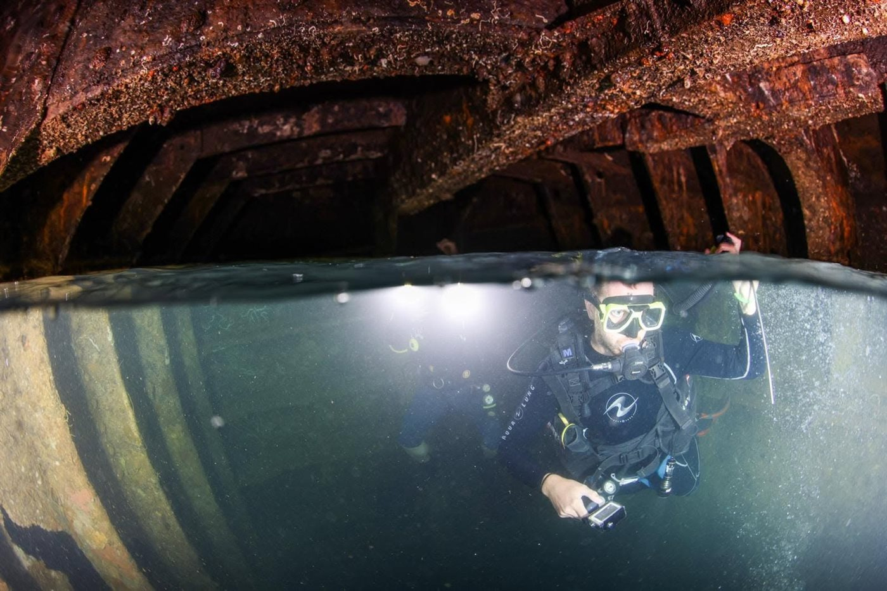
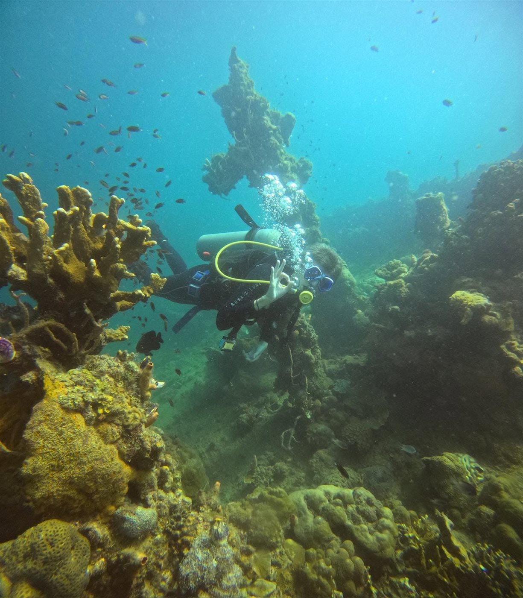
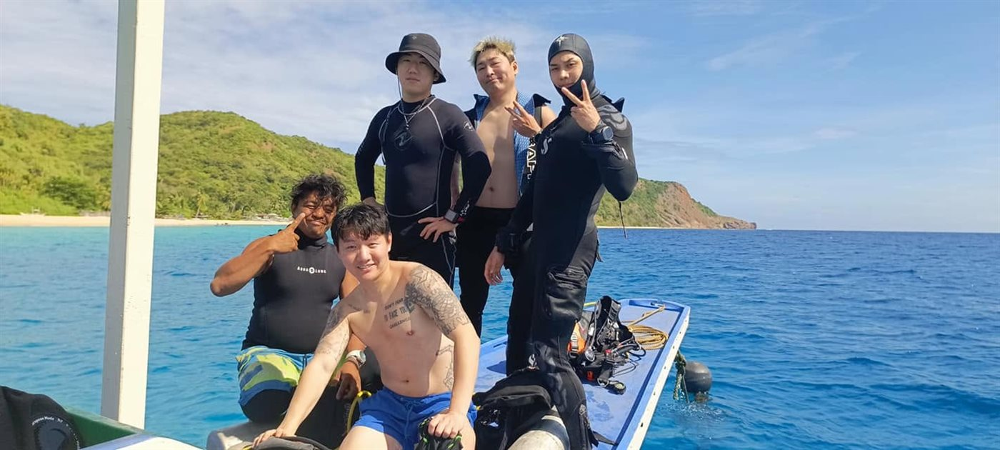

Wreck Diving, Reef Diving & Island Hopping
Three ways to see Coron Bay, all guided by our local team. Message us with your dates, group size, and experience level and we’ll help you plan the right trip and confirm current rates.

Wreck Diving
Coron Bay is known worldwide for its WWII Japanese shipwrecks, and wreck diving is the trip our guests mention most often. It’s the signature W Divers Coron experience.
- Guided dives on Coron Bay’s WWII shipwrecks
- Local guides who know each wreck site
- Trips can be combined with reef diving
Reef Diving
Coron Bay’s reef sites offer a change of pace from wreck diving — a good fit for pairing with a wreck dive, or as a standalone trip for a more relaxed day underwater.
- Reef sites around Coron Bay
- Often paired with a wreck dive on the same trip
- Guided by our local team


Island Hopping
Beyond diving, we organize island hopping trips around Coron’s uninhabited islands and the Barracuda Lake area — a good option for non-divers, mixed groups, or an extra day at the end of a dive trip.
- Uninhabited islands around Coron Bay
- Barracuda Lake area
- Suitable for non-divers and mixed groups
Booking a Trip
Getting on the water starts with a message. Here’s what to expect.
Message Us
Reach out on WhatsApp, phone, or email with your preferred dates, group size, and experience levels (certified, non-certified, or a mix).
We Confirm Details
We’ll get back to you to confirm trip type, schedule, and current rates for your group.
Dive Day
Meet the team, gear up, and head out on the boat to Coron Bay’s wreck, reef, or island sites.
Have Questions Before You Book?
Rates, availability, and trip combinations are easiest to sort out over a quick message — we’re happy to help you plan.